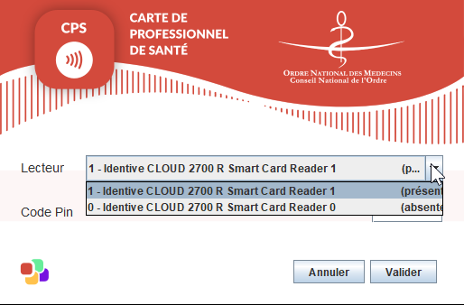
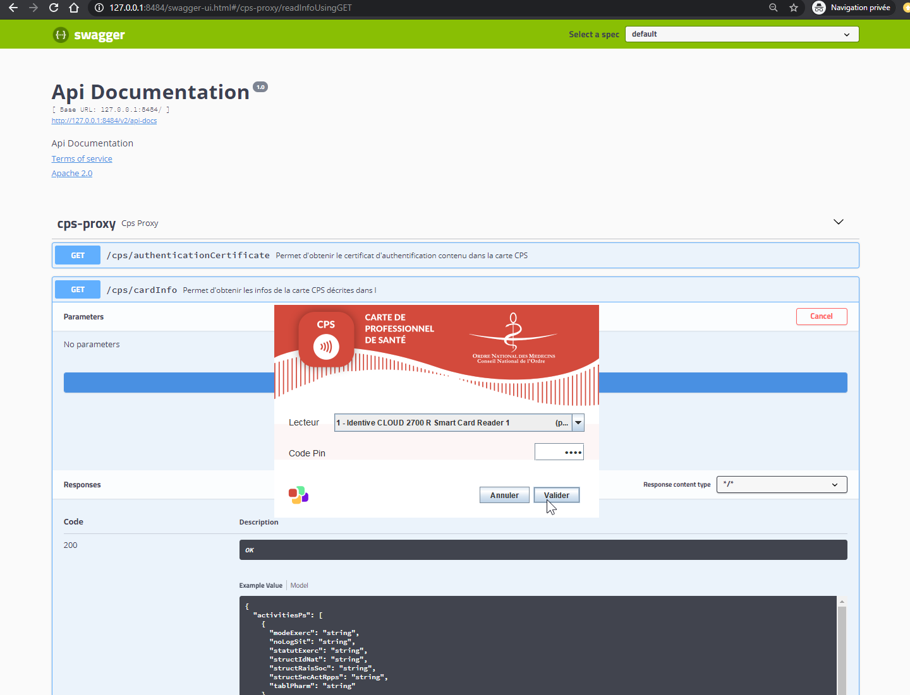

CPS
L’api CPS3 (même une SPI) proposée par DEVCOOP afin de proposer un niveau d’abstraction suffisant pour un programme java d’accéder à la carte CPS3.
Le document de référence est ASIP_CPS3_Données-métier_v1.0.2.doc
Implémentation
Le module cps-impl, fournit l’implémentation de la CPSFacade qui intègre la Cryptolib CPS de l’ANS.
Exemple de code dans une application Spring Boot :
public class MonComposantCPS {
@Autowired
CPSFacade cps;
public void maMethode() {
assert cps.isAvailable();
final List<CardReaderInfo> availableReaders = cps.getAvailableReaders();
cps.selectReader(0L);
final CpsCardInfo cardInfo = cps.readInfo(); // Une demande d'authentification auprès de l'utilisateur est réalisée sur cet appel
assert cps.isLogged();
final PrivateKey signaturePrivateKey = cps.getSignaturePrivateKey();
}
}
Personnalisation du PinProvider
La saisie du code Pin est possible à partir du PinProviderFrame développé en Swing.

Mais, il est tout à fait possible de fournir son propre provider ou encore utiliser le NoPinProvider, et appelé explicitement la méthode setPin().
Signature PDF
Le module cps-pdf, contient le code permettant de générer des signatures PDF https://helpx.adobe.com/fr/acrobat/using/signing-pdfs.html.
Il s’appuie sur la librairie apache PDF-BOX.
Exemple de code :
final PdfSignatureInfo pdfSignatureInfo = new PdfSignatureInfo();
pdfSignatureInfo.setLocation("Léognan, FRANCE");
pdfSignatureInfo.setReason("Parceque");
new PdfSigner(cps).sign(new FileOutputStream("exemple.pdf"), pdfSignatureInfo, new FileOutputStream("exemple-signe.pdf")));
Proxy REST
Le module cps-proxy, permet de fournit une facade REST à la CPSFacade java.
L’accès au CPS-proxy est indépendant de la technologie utilisée par l’intégrateur. Exemple d’intégration possible :
!include https://bitbucket.org/devbox-sante/plantuml/raw/3/themes/theme-devbox-sante.puml
node "Poste Client (Windows/Mac/Linux)" {
[FrontEnd intégrateur] as frontend
package "DevBox-Santé" DEVBOX_COLOR {
[interface CPS-API] as cpsFacade CPS_COLOR
}
[Cryptolib CPS (ANS / ASIP)] as cryptolibCPS
}
[BackEnd intégrateur] as backend
frontend -down-> cpsFacade : REST "GET "/cps/cardInfo""
cpsFacade <-down-> cryptolibCPS : appel natif
frontend -right-> backend : REST
Exécution
Exemple Swagger :

Exemple CURL :
- Récupérer l’état des différents lecteurs de carte :
curl -X GET "http://127.0.0.1:8484/cps/readersInfo" -H "accept: */*"
- Lire les informations de la carte
curl -X GET "http://127.0.0.1:8484/cps/cardInfo" -H "accept: */*"
- Signer un fichier PDF :
curl -X POST "http://127.0.0.1:8484/cps/signPdf?location=Bordeaux&reason=Parceque" -H "accept: */*" -H "Content-Type: multipart/form-data" -F "multipart=@fichier.pdf;type=application/pdf"
Configuration
Le cps-proxy est une application web Spring Boot, toutes les possibilités de spring-security sont donc disponibles.
Exemple de configuration de base empêchant toutes les IPs externes :
devbox-sante:
cps:
security:
authorizedIpAddress: 127.0.0.1